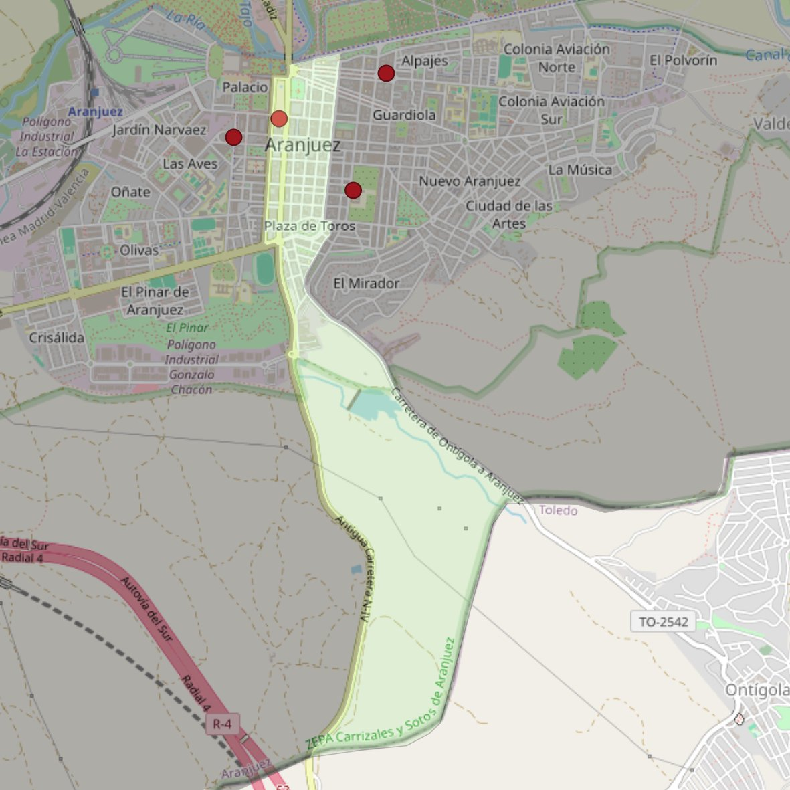

San Antonio

- Arciprestazgo
- Aranjuez
- Población
- Aranjuez
- Dirección postal
- Carretera de Andalucía, 4
- Código postal
- 28300
- Extensión
- 2,15 km² (215 ha)
- Teléfono
- 918 916 693
- Correo electrónico
- sanantonio_aranjuez@diocesisgetafe.es
Límites territoriales según el decreto
Partiendo de la glorieta “Santiago Rusiñol”, arrancan, dejando a la izquierda la plaza San Antonio; siguen por el eje de la calle Florida (en dirección sur), por el eje del paseo del Deleite (en dirección noreste), por el eje de la carretera de Andalucía (N-IV, en dirección suroeste), por el límite de las provincias de Madrid-Toledo (en dirección noreste), por el eje de la carretera de Ontígola (TO-3115-V, en dirección noroeste), por el eje de la calle Carretas (en dirección noreste), por el eje de la calle Capitán Angosto G. Castrillón (en dirección norte) y por el eje de la calle La Reina (en dirección suroeste) hasta la glorieta “Santiago Rusiñol”, punto de partida. (Decreto de rectificación de límites del 21-6-2005; B.O. de julio-agosto de 2005, pág. 783)